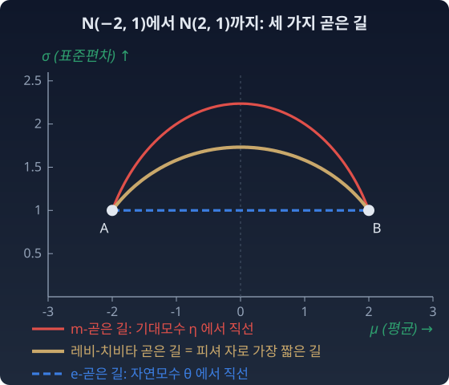

접속의 선택: 곡률은 공간과 접속이 함께 정한다
지구본 위에서 화살표를 옮길 때 쓴 규칙은 레비-치비타 접속 하나였다. 그런데 그 접속을 고르는 것은 정리가 아니라 선택이라 했다. 다른 규칙을 고르면 무엇이 달라질까? 곧은 길이 달라지고, 곧은 길이 달라지면 고리를 돈 화살표도 달라진다. 확률분포의 공간에서는 이 선택이 실제로 여럿 쓰인다.
정보기하학은 접속을 여럿 쓴다
확률분포의 공간에는 피셔 자가 하나 놓인다. 그 자 위에 얹을 수 있는 자연스러운 접속은 하나가 아니다. α라는 수 하나로 줄 세운 한 가족이 있다. 그 가운데 셋이 특별하다.
- α = 0 : 레비-치비타 접속. 곧은 길 = 피셔 자로 잰 가장 짧은 길.
- α = +1 : e-접속(e = 지수, exponential). θ 좌표(자연모수)에서 곧은 길이 직선이다. 곱셈의 길.
- α = −1 : m-접속(m = 혼합, mixture). η 좌표(기대모수)에서 곧은 길이 직선이다. 덧셈의 길.
같은 두 점을 잇는 곧은 길이 곱셈의 길과 덧셈의 길, 두 개인 이유가 이것이다. 자가 둘이어서가 아니다. 자는 하나다. "곧음"의 규칙, 접속이 둘이어서다. e-측지선과 m-측지선은 곧은 길이지 가장 짧은 길이 아니다.
아래 그림은 같은 두 정규분포 A = N(−2, 1²)와 B = N(2, 1²)를 잇는 세 가지 곧은 길을 (μ, σ) 평면에 그린 것이다. 레비-치비타 접속의 곧은 길은 피셔 자로 가장 짧은 길이고, σ가 큰 쪽으로 불룩 올라가는 반타원이다. μ를 √2로 나눈 좌표로 다시 그리면 정확한 반원이 된다. 피셔 자 ds² = (dμ² + 2dσ²)/σ²에서 μ 방향과 σ 방향의 눈금이 √2배 다르기 때문이다. e-곧은 길은 두 분포의 σ가 같아서 여기서는 좌표 위 직선과 겹치고, m-곧은 길은 가장 높이 올라간다.

곡률은 (공간, 접속) 쌍의 성질이다
접속이 바뀌면 평행이동이 바뀌고, 고리를 돈 화살표가 돌아가는 각도 바뀐다. 그러니 곡률도 바뀐다. 정확한 말은 이렇다. 곡률은 공간 혼자의 성질이 아니라, 공간과 접속 쌍의 성질이다.
가장 선명한 실물이 1차원 정규분포족 N(μ, σ²)이다. 이 공간의 피셔 자는 다음과 같다.
레비-치비타 접속으로 보면 이 공간은 곡률이 −1/2로 일정한, 안장처럼 휜 쌍곡 평면이다. 그런데 같은 공간이 e-접속으로 보면 평평하다. θ 좌표에서 e-곧은 길이 모두 직선이고, 고리를 돌아도 화살표가 돌아가지 않는다. m-접속으로 보아도 평평하다. 짝을 이룬 두 접속 모두에서 평평하다는 뜻으로, 이것을 쌍대평탄(dually flat)이라 부른다.
공간도 같고 자도 같다. 바꾼 것은 “무엇을 곧다고 부를 것인가” 하나뿐인데, 공간이 평평해지기도 하고 휘어지기도 한다. 그래서 이 책에서 "곡률"이라고 쓸 때는 어느 접속의 곡률인지 밝힌다.
ML에서: 여러 모델을 하나로 합칠 때 무엇을 평균하나
여러 모델의 예측 분포를 하나로 합칠 때도 이 선택이 나온다. 모수를 그대로 평균할 수도, 확률을 섞은 뒤 그 평균과 분산을 맞출 수도 있다. 겉으로는 둘 다 "가운데"를 고르는 일이지만, 어느 곧은 길의 가운데를 고르느냐가 다르다. 실제로 어떤 모델들이 어느 쪽을 쓰는지는 아래 문제 14에서 따져 본다.
한 걸음 더 — 곡률 0인 중력, 텔레패럴 중력
일반상대론은 레비-치비타 접속을 골랐다. 다른 접속을 고르면 어떻게 될까. 바이첸뵈크(Weitzenböck) 접속을 쓰는 텔레패럴 중력은 곡률을 0으로 두고, 대신 비틀림(torsion)에 중력의 역할을 맡긴다. 텔레패럴 이론은 여럿인데, 작용(운동방정식을 낳는 식)을 특별히 고른 한 가지는 일반상대론과 정확히 같은 이론이 되어 관측 가능한 예측도 같다.
그러니 "시공간은 휘어 있다"는 자연이 강제한 유일한 서술이라기보다, 레비-치비타 접속이라는 가장 편리한 관례를 택했을 때 나오는 서술이다. 정규분포족이 e-접속으로는 평평하고 레비-치비타 접속으로는 휘었던 것과 같은 이야기다. 빛은 휘지 않는다. 빛은 언제나 곧게 간다. 다만 우리가 "곧다"고 부르기로 한 그 길이, 멀리서 보면 예상한 자리에 있지 않을 뿐이다.
수확
“측지선에는 두 얼굴이 있다. 자가 정하는 가장 짧은 길, 접속이 정하는 곧은 길. 정보기하학에서 자는 하나, 접속은 여럿이다. 곡률은 공간과 접속이 함께 정한다. 같은 정규분포족이 e-접속으로는 평평하고, 피셔 자의 레비-치비타 접속으로는 K = −1/2로 휘었다.”
이제 이 장 첫머리의 질문, 「좌표 한 걸음의 크기가 곳마다 다르면 공간이 휘었다고 할 수 있는가」에 답할 수 있다. 한 걸음의 크기가 곳마다 다른 것은 자의 눈금 이야기다. 휘었는지는 어느 접속으로 보느냐에 따라 다르다.
문제 14. 두 모델의 예측을 하나로
두 회귀 모델이 같은 입력에 예측 분포 A = N(−2, 1²)와 B = N(2, 1²)를 냈다. 둘을 합친 “가운데” 예측 하나를 정규분포 N(μ, σ²)로 고르려 한다. (가) 모수 (μ, σ)를 그냥 평균하면 무엇이 되는가? (나) A와 B를 반반 섞은 혼합분포의 평균과 분산을 구하고, 그 둘을 맞춘 정규분포를 고르면 무엇이 되는가? (다) 두 후보와 N(0, 3)을 놓고, A에서 후보를 거쳐 B까지 가는 피셔 거리의 합을 비교하라. 두 정규분포 사이의 피셔 거리는 d = √2 · arccosh(1 + ((Δμ)²/2 + (Δσ)²)/(2σ1σ2))이다. 세 후보는 각각 어느 곧은 길의 가운데인가?
함께 풀기

(가)는 평균이니까 N(0, 1²)이죠. 가운데는 가운데고요.

(나)는 달라. 반반 섞으면 평균은 0인데, 분산은 두 분포 안의 분산 1에 두 평균이 ±2로 벌어진 몫 4가 더해져서 5야. 그러니까 N(0, 5), 곧 σ = √5 ≈ 2.24.

가운데가 둘이네요. 폭이 1이냐 2.24냐는 꽤 달라요.

두 모델이 −2와 2로 엇갈렸어요. 합친 예측이 N(0, 1²)이면 무엇을 말하는 셈이에요?

"0 근처라고 꽤 확신한다"요. 두 모델이 서로 다른 말을 했는데 오히려 둘 중 누구보다 좁게 확신하는 척하는 거네요. 엇갈림이 불확실함에 안 들어갔어요.
그래서 2017년 “딥 앙상블” 논문(라크슈미나라야난(Balaji Lakshminarayanan) 등)은 여러 모델의 정규분포 예측을 혼합으로 보고, 그 혼합의 평균과 분산을 갖는 정규분포 하나로 근사해요. (나)의 방법이에요. 그럼 (다)요.
식에 넣었어요. 거리의 합이 N(0, 1²)을 거치면 3.725, N(0, 5)를 거치면 3.353, N(0, 3)을 거치면 3.242예요. N(0, 3)이 제일 짧아요.

3.242는 A에서 B까지 곧장 잰 피셔 거리랑 같아요. 그러니까 N(0, 3)은 피셔 자로 가장 짧은 길, 레비-치비타 곧은 길의 한가운데예요. (가)는 두 분포의 σ가 같아서 자연모수 θ를 평균한 것과 같으니까 e-곧은 길의 가운데이고, (나)는 평균과 제곱의 평균, 곧 기대모수 η를 평균한 거라 m-곧은 길의 가운데예요.
그래요. "가운데"는 무엇을 곧다고 부를지 정해야 하나로 정해져요. 딥 앙상블이 쓴 것은 m-곧은 길의 가운데이고, 모델들이 엇갈린 만큼 폭이 넓어져요.
수학 시간에 산술평균, 기하평균, 조화평균이 다 "평균"인데 값이 다르다고 배운 거랑 같네요. 평균이라는 말만으로는 어느 것인지 안 정해져요.
문제 15. 고리를 돈 화살표 (킬러)
구면 위의 삼각형을 따라 화살표를 평행이동하면 돌아간 각이 "삼각형의 넓이 × 곡률"과 같다(반지름 1이면 넓이 그 자체). (가) 꼭짓점이 (30°N, 0°), (30°N, 10°E), (40°N, 5°E)인 작은 삼각형에서 수치로 확인하라. (나) 이 회전이 “3차원에서 접평면이 기울어서” 생긴 외재적 효과가 아님을 보여라. (다) 같은 실험을 정규분포족의 피셔 자 위에서 한다면 화살표는 어느 쪽으로 도는가? 레비-치비타 접속 대신 e-접속으로 옮기면 어떻게 되는가? (접속 절 위젯의 「작은 삼각형」이 (가)의 삼각형이다.)
함께 풀기
(가)는 제가 짠 코드로 했어요. 변마다 점을 몇 개 찍고, 한 점씩 옮기면서 화살표를 그 점의 접평면에 사영하고 길이를 1로 맞추는 방식이요. 변마다 한 걸음씩만 가면 회전이 0.737도인데, 내각합−180°는 0.751도예요.
2% 가까이 차이 나요. 그러니까 "회전각 = 넓이"는 큰 삼각형에서만 맞는 근사 법칙이고, 작은 삼각형에서는 곡률이 넓이 말고 다른 데서도 새어 들어오는 것 같아요.
변마다 걸음 수를 늘려 봐요. 법칙이 틀렸다면 차이가 그대로 남아야겠죠.
10걸음이면 0.7496, 1000걸음이면 0.75057이에요. 내각합−180°는 0.75058이고요.
걸음을 늘릴수록 붙어요. 새어 들어온 건 곡률이 아니라 제 코드가 대원을 뚝뚝 끊어 간 오차였어요.
그건 됐는데, 나는 (나)가 걸려요. 민준이 코드도 결국 3차원에서 접평면에 사영하는 거잖아요. 화살표는 3차원에서 보면 매 순간 가능한 한 안 돌았는데, 접평면이 계속 기울어서 결과적으로 돈 거예요. 그러면 이건 바깥에서 본 휨, 외재적 효과 아닌가요?
그 논리대로면 접평면이 기울기만 하면 화살표가 돌아야겠네요. 접평면이 기울지만 안에서는 평평한 곡면이 있었죠?
원기둥이요. 원기둥 둘레를 따라가면 접평면이 계속 돌아가니까, 제 말대로면 원기둥에서도 화살표가 돌아야 해요.
같은 코드로 원기둥 위 삼각형을 돌려 볼게. 꼭짓점을 펼친 좌표로 (0, 0), (π/2, 0), (π/4, 1)로 잡고… 2걸음부터 1000걸음까지 전부 0.0도야.
접평면은 똑같이 기울었는데 안 돌아요. 그러니까 회전은 접평면의 기울기가 아니라 곡면 안의 곡률에서 와요. 구면에서 3차원 사영을 쓴 건 계산 수단일 뿐이었어요.
맞아요. 평행이동은 곡면 위의 자만 알면 정해져요. 가우스의 정리와 같은 이야기예요. 그럼 (다)는요?
정규분포족의 피셔 자는 레비-치비타 접속으로 K = −1/2예요. 곡률이 음수니까 내각의 합이 180도보다 작고, 화살표도 반대쪽으로 돌 거예요. 돌아간 각은 넓이의 절반이고요.

그런데 e-접속으로 옮기면 곡률이 0이니까, 같은 고리를 돌아도 화살표는 그대로 돌아와요. 고리도 같고 자도 같은데, 옮기는 규칙만 바꿨더니 결과가 달라요. 곡률이 접속의 성질이라는 게 이 말이었어요.
조별 과제 파일을 조원들 사이로 한 바퀴 돌리는 거랑 비슷하네. 각자 "안 고치고 넘겼다"고 해도, 무엇을 "안 고쳤다"로 치느냐에 따라 돌아온 파일이 다른 거지. 서식만 안 건드리는 규칙이면 내용이 바뀌어 오고, 내용을 안 건드리는 규칙이면 서식이 바뀌어 오고.

오늘 두 사람 다 같은 함정의 양쪽을 봤어요. 민준 학생은 계산 오차를 곡률로 읽을 뻔했고, 서연 학생은 곡률을 바깥의 효과로 읽을 뻔했어요. 곡률은 그 둘을 다 걷어낸 뒤에 남는 것, 공간과 접속이 함께 정하는 안쪽의 양이에요.